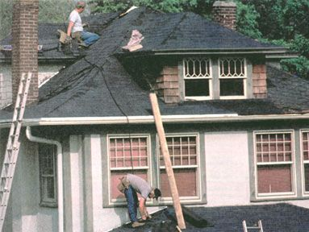
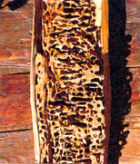

An environmental checklist for new home buyers.
When we buy a car or a new computer, we often read consumer and specialty magazines to get the background information we need to make an informed decision. But when we buy land and a house - perhaps the most significant purchase that we make in our lives - the average American spends very little time on research. Usually we worry only about affordability or mortgage qualifications, and we don't stop to consider the environment we're buying into.
At times, the environmental considerations of buying a home can even be more crucial than the purchase price. Asbestos ceilings and lead paint can lead to less-than-healthy indoor air quality; and if your property lies in a floodplain or over a sinkhole, then you may be rebuilding sooner than you think. The following checklist will identify some fundamental considerations that you need to be aware of before you buy your next home. If you wait until after the purchase, it may be too late.
While a house near a tranquil river may seem like an idyllic paradise, spring rains can easily turn your dream home into a disaster area. Even in areas of the country where streambeds are dry for significant portions of the year, a sudden rain can turn that streambed into a raging river. Do not be fooled by the size of the stream; even small ones can flood and cause considerable damage. The quickest way to find out whether or not land sits in a floodplain is by referencing the Federal Emergency Management Agency (FEMA), a government agency that publishes maps called Flood Insurance Rate Maps (FIRM). They are available at state environmental agencies, county planning departments, and local, county and university libraries. If you purchase a house in a floodplain, make sure you obtain flood insurance, but as a general rule avoid buying houses in the 100- or 500-year floodplain of rivers or streams.
Wetland areas, better known as swamps or bogs, can be covered with water all or only part of the year and should be avoided at all costs. If you come across a house built in one of these spaces, you'll notice wet basements along with flooding or settling problems. In addition, since the federal and state governments regulate development in wetlands, it will be difficult - not to mention expensive and time-consuming - to obtain approval for construction.
The most significant cause of flooding in basements, however, does not come from wetlands or traditional flooding from rivers and streams, but rather from poorly drained runoff or high water tables. Location, slope, vegetation and soils are all determining factors for runoff-if not properly managed, drainage can cause significant problems for homeowners. If you are at the top of a hill, for example, you have far less potential for problems than if you are at the base of a hill. When shopping for land, try to investigate the site while it's raining so you can check out its drainage systems.
At times, the environmental considerations of home buying can even be more crucial than the purchase price.
Thankfully, drainage problems can often be resolved either by simple measures like cleaning the gutters and downspouts, or by more complex measures such as recontouring the land. But water that flows along the surface is quite different from water that flows underground in the water is a significant seasonal problem. Thawing temperatures and spring rains can raise the level of water in the ground, and this water can seep into basements through cracks and joints. Unlike surface drainage, however, there is little that can be done to mitigate a high water table. Sump pumps can remove minor water table problems, but if it's too high you are usually better off in a house without a basement.
Where the grade of the land is greater than 12% to 15% (that is, where the land slopes upward 12 feet or more for every 100 feet of horizontal distance) it will be difficult to build a house, and there is a great likelihood that soil around the house will erode with any water gravitating downhill. Steep slopes often result in mud- and rockslides; very steep slopes in mountainous areas can result in landslides and avalanches of snow. These inclines have been a major problem in the coastal areas of California and other locations, where people like to build for the view. In these areas, mudslides are an all too common - and disastrous - occurrence. If you decide to build or buy on steep slopes, make sure that the house is either terraced or supported by stilts on concrete footers. Terracing is more expensive, but it provides the best support. Be aware, however, that neither method is without significant risks. Even though you may have a great view of the ocean, you don't want your house to end up in the drink.
United States Environmental Protection Agency (EPA) studies of radon, an odorless, colorless, radioactive gas that is a natural decay product of uranium in the soil, indicate that long-term, chronic exposure to high levels of the gas can cause lung cancer. And since it is found everywhere in varying concentrations, radon generally finds its way into homes through drain openings, sump wells, cracks in the foundation floor or through cinder block walls. You can determine radon presence by conducting a three-day test prior to the purchase of a house. If the test returns levels above 4 pCi/L (picocuries per liter) you should negotiate for remediation of the problem. Relatively inexpensive techniques such as crack sealing and radon ventilation are effective in solving low to medium radon levels, but high levels may require more expensive action. In this case, you may choose to pass on the house.
Check for tunnels or rotten wood when inspecting a home. Termites, carpenter bees and ants will treat a foundation like just another meal.
Many people tend to forget that humans are not the only inhabitants of the earth; for some reason, we are surprised when insects invade our home. There are thousands of different types of insects in every part of the world, and mosquitoes, ants, spiders, wasps and moths, to name a few, will intrude upon us at will. While wasps and mosquitoes can ruin your picnic, these insects usually don't have the significant impact on your house that carpenter ants, carpenter bees and termites have. To those insects, your wooden house is simply another tree in which to nest and upon which to feed.
When inspecting a home check the foundation of the house for termite tunnels, and check any exposed areas for soft or rotted wood. Carpenter ants will usually deposit wood shavings and insect parts near these areas of "spongy wood." Carpenter bees usually leave round holes and tunnels in exposed wood. All can be taken care of by environmentally friendly insecticides, although be aware that many of these pests will return for another visit in the future.
Until the late 1970s, asbestos was commonly used as an insulation for attics, water- and sewer pipes, and as a material in the manufacture of ceiling tiles, vinyl floor tiles and roof shingles. Since then, scientific evidence has shown that asbestos fibers are a potential carcinogen, particularly for people who are constantly exposed to loose fibers over a prolonged period of time. Asbestos that is in good condition and is not deteriorating should be left alone. Removing it increases the potential for spreading fibers throughout the house and may pose more of a threat than leaving the insulation alone.
Even so, look for asbestos in and around furnaces and stoves, door gaskets, pipe and attic insulation, wall and ceiling material, vinyl floor tiles and sheet flooring, textured paint, roofing, shingling, siding and appliances. If the material is in poor shape, consider either not buying the house or incorporating the cost of removing the asbestos in the purchase price. Asbestos removal requires a professional contractor who has been trained and, if appropriate, licensed by a state agency. This process is costly and requires extensive preparation.
Similarly, if your house was built before 1978, the walls may have been painted with lead paint that can be toxic to adults and children when breathed in or swallowed. According to the EPA and the Department of Housing and Urban Development (HUD), children under age 6 who have been exposed to lead can develop learning and behavioral problems.
The presence of lead paint can be determined only by testing. The Residential Lead Based Paint Hazard Reduction Act requires that sellers of houses built before 1978 must disclose known lead-based paint, but the law, which is applicable in all 50 states, does not require sellers to repair or correct the problem. If the paint is in good condition, it can probably be painted or wallpapered over. If the house interior has been repainted during the last 15 years, you probably don't have to wont' unless all of the paint is peeling or flaking. Improper removal of lead paint can produce paint chips, dust and fumes - all of which can make you sick.
In addition to paint, lead is usually present in the solder that connects the copper water distribution pipes. There are only two ways to deal with lead in this form: Replace all of the pipes with non-leaded soldered joints (a very expensive alternative), or filter your drinking water. Since heat encourages leaching, lead is more of a problem in the hot water supply pipes than the cold water pipes. Therefore, it is best not to use hot water for drinking or cooking.
There has been increasing concern about the potential health risks from electromagnetic fields (EMFs) associated with electric transmission and distribution lines. Since 1979, scientific studies have suggested a potential relationship between exposure to EMFs and certain cancers. These studies, however, are far from conclusive, but most everyone agrees that the closer you are to the electro-magnetic field, the stronger the effects will be. Unfortunately, there is no consensus about what constitutes a "safe" level of exposure to EMFs.
Nevertheless, for some the presence of electric transmission lines has become a legitimate concern. Some buyers, especially those with small children, will refuse the house outright. In response, the real estate market has reacted to concerns about the health risks of EMFs and prices of homes near large transmission lines have dropped dramatically, usually selling at a discount. To some this may mean more house for less, but beware: This discounting will also be around when it's time for you to sell.
These areas occur when the surface soil collapses because the underlying soil or geology is either washed or eroded away. Fortunately, sinkholes are rare; they usually occur either in areas where the underlying geology is composed of easily erodible material such as limestone or where the underlying soil is exposed to a high water table. Avoid areas where sinkholes have been previously recorded, since it's impossible to predict accurately when another will occur.
Tradition has it that when ore was exhausted from a mine, the tunnels were abandoned and no one was left behind to maintain the site. As a result, water seeped into shafts and undermined support timbers, causing them to rot and fall apart. Mine walls also shifted as the subsurface geology changed; in some coal mining areas, abandoned mines even caught fire. As a result, the land that is directly over mines can sink, or even catch fire.
Although relatively rare, abandoned wells are discovered on properties from time to time. The principal concern with these is safety because there have been incidents of animals and even small children falling into and becoming trapped in abandoned well shafts. (Who can forget the highly publicized rescue of little Jessica McClure from an abandoned well in Midland, Texas in 1987?) To be certain, some states keep records of wells that are dug, but since most of the problem wells are very old, the only sure way to determine if there is one on your property is to walk the property and look for evidence before you purchase.
Underground oil tanks may be present either on the property or in the basement of an older house or a house in a rural area. Older tanks, particularly tanks underground, will rust and leak over time posing not only an economic concern, but also health concerns by affecting your drinking water supplies. If you find one on the land you're looking to buy, try to determine the age of the tank, since this will be a good indication of the potential for problems. Also, consider moving underground tanks indoors so that you can monitor them for future problems.
Leftover pesticides in the soil can seep into groundwater and wells.
If you are building or buying a house on an old farm or near a working farm, there is a potential for pesticide contamination in the soil. Farmers use an array of chemicals to control pests and weeds; these can enter the soil or a well by direct runoff, through local streams, through underground water flows, or as a result of past improper disposal. The only way to know whether your soil or your drinking water is contaminated is to have it tested. As a rule of thumb, it may be best to pass on the purchase of any site that contains significant amounts of toxic materials.
There are two types of wastewater services: central sewer collection systems and onsite systems. Central sewer collection does not usually pose a concern. Onsite systems such as septic tanks, seepage pits and cesspools, on the other hand, may be more problematic, particularly for older homes. No matter what kind of onsite system is in the ground, you must have it inspected by a professional to determine if it is working properly. Old systems like cesspools may need to be replaced with newer systems that meet today's codes. Even working septic systems may require repairs or at least a cleaning. Be aware that a septic system cannot dispose all of the items you may put in a toilet that is connected to a central sewer. Also know that you are ultimately responsible for any system failures.
Like wastewater services, there are also two types of water supply: central systems and onsite wells. Again, central systems are not usually a concern. All public water supplies are tested regularly for contaminants. Onsite wells, however, may be contaminated and require testing prior to buying the house. Check for the presence of coliform bacteria from septic systems and leaking sanitary sewers. Also, test the well for pH, hardness, cryptosporidium (a microscopic parasite), heavy metals, pesticides, herbicides, and nitrates/nitrites (chemicals from fertilization or leaking septic systems). Regardless of the type of water supply you may want to buy a filter for your sinks to eliminate taste, odor and trace contaminants.
Remember: When it comes to buying a house, you are not alone. Real estate agents, building inspectors, local building officials, and county or local environmental officials are all there to help. Also, talk to neighbors and do as much research as you can - doing your homework and knowing what to look for is your best education when it comes to buying a home. Since you will be living in this house for a long time, you want the experience to be as rewarding and positive as possible.
Barry Chalofsky has been an environmental planner for more than 26 years. He has written two books, including The Home and Land Buyer's Guide to the Environment, which is available on MOTHERS Bookshelf [ call (800) 888-9098]. For more information, visit www.erols.com/profed.
|
 |
|
 |
|
|
|
|